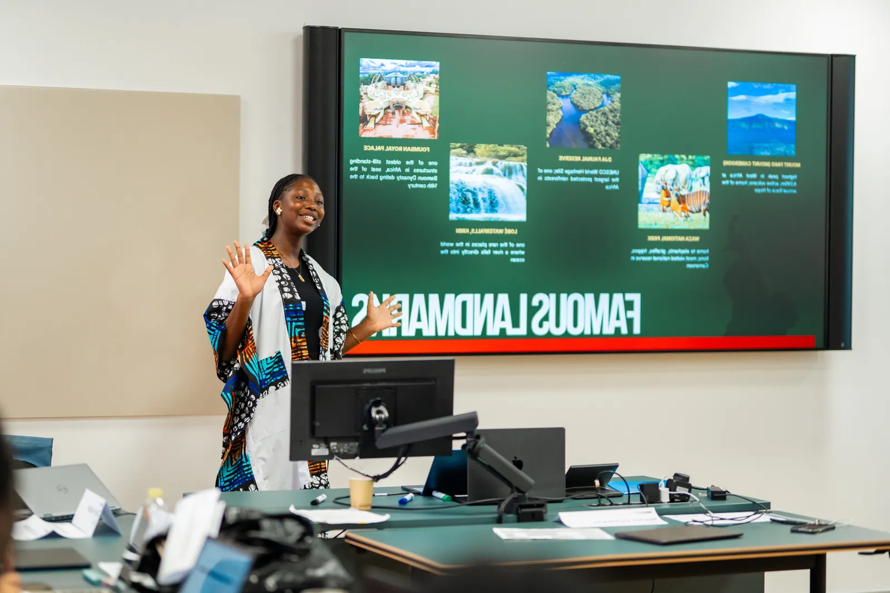
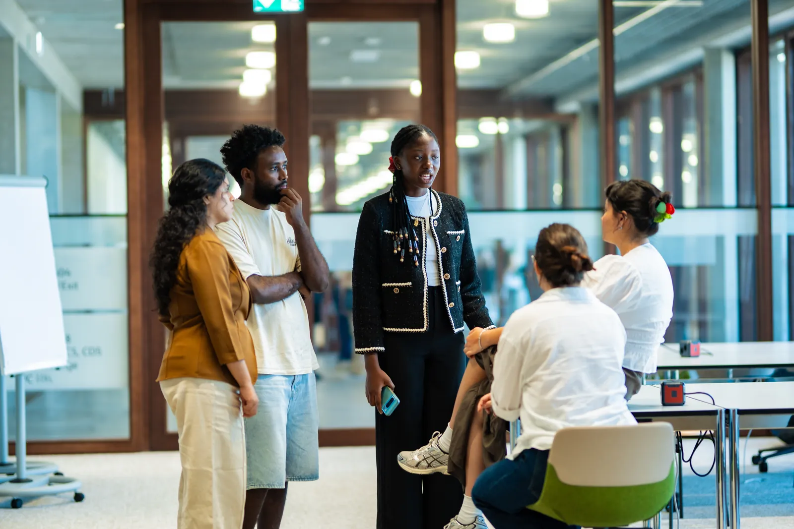

My Story.
Where it Began
I'm Sandrine Ojong, a Cameroonian, social entrepreneur, education advocate, speaker and a Mastercard Foundation Scholar, studying Entrepreneurial Leadership at the African Leadership College of Higher Education in Mauritius.
I was fifteen when I first heard the word scholarship. I could hardly believe that universities existed that would educate students without asking their families to pay. I was in boarding school, with zero internet access, so I began writing down everything I heard. For the next two years, I spent whatever time I could find trying to understand how these opportunities worked. Much of the information I found was designed for students abroad, and I struggled to see how it applied to my own context.
Eventually, I found Knowledge Center (KC), Cameroon. Through the community, I met students who had secured opportunities I once thought were out of reach. As I became more informed and guided, I remained struck by how many young people around me had no idea these possibilities existed, sometimes discovering them only after they had missed their chance.
I began wondering how many people never discover or realize what they are capable of because they never encounter the opportunities, ideas, or people that could help them find out.
That question continues to guide my interests. I'm fascinated by how exposure shapes ambition, how education influences development and innovation, and how many ideas the world may be missing because talent, in underserved areas, is very underdeveloped. I want to spend my life exploring these questions and building things that help change that.
My work in expanding access
Once I understood how much a person's environment could influence what they imagined for themselves, I wanted to change that for students growing up with fewer opportunities to explore their potential.
I started at TIC Foundation, coordinating regional activities, student clubs, and competitions that reached over 2,000 students. I also took on greater responsibilities at Knowledge Center, the same community that had helped me navigate my own scholarship journey. I eventually became one of its co-founders, helping grow a community that has now reached over 10,000 students across Cameroon.
Along the way, I saw how difficult it could be for underserved students to find reliable guidance through international university admissions. Having struggled with this myself, I wanted to make the process easier to navigate. This led me to co-lead the Global Scholars Program, which prepares students for international scholarship opportunities. Within three months, we brought the program to life and raised over CFA 5 million. Students from our program have since secured full scholarships at institutions all over the world like MIT and Wesleyan University.
I currently serve as the student representative for Africa on UNESCO's SDG4 Youth Student Network, contributing to efforts to advance SDG 4 and shape conversations about the future of education. In October 2026, I joined a UNESCO-coordinated workshop in Tokyo, where we brought together youth perspectives from across the world to consolidate the voices of more than 200,000 young people and represent youth collective vision and commitments for education beyond 2030.
Carrying young people's voices into the room.
As the student representative for Africa on the UNESCO SDG4 Youth & Student Network, I have contributed to youth-led discussions on the future of education, including the post-2030 education youth agenda. In October 2026, I joined a UNESCO-coordinated workshop in Tokyo, where we gathered to consolidate and represent the voices of young people worldwide.
About the networkA few moments.
Classrooms, workshops, and the people who make the work worth doing.





If this resonates, let's talk.
I'm always glad to hear from people building better access to education, opportunity, and the rooms where decisions get made.